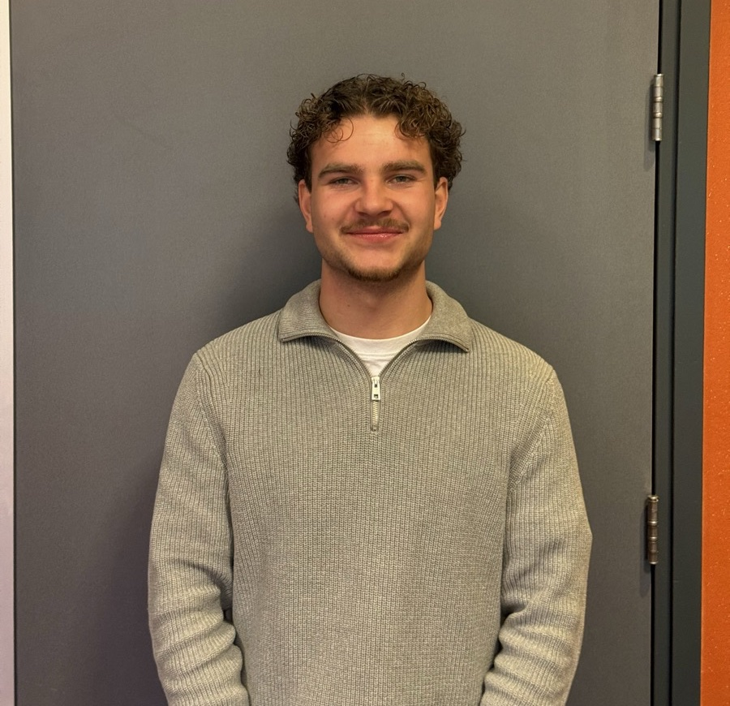

Nieuwsgierig, analytisch en altijd in beweging.
Ik ben Cas de Waard, vierdejaarsstudent Commerciële Economie aan de Hogeschool van Amsterdam. Ik zoek uit hoe iets in elkaar zit en vertaal dat naar advies, het liefst in een omgeving waar beweging in zit, zoals de sport.

- Speed
- Armor
- Knowledge
Gadget: AI-orchestratie · Zwakte: uitstellen
Wie ik ben, wat ik kan en waar ik naartoe wil.
Wie ben ik?
Wat drie persoonlijkheidstests over mij zeggen, hoe ik samenwerk en waarom sport zo'n grote rol speelt.
Bekijk meer 02Wat kan ik?
Mijn CE-vaardigheden, telkens met concreet bewijs uit projecten, mijn stage en mijn minor.
Bekijk meer 03Wat wil ik?
Wat voor werk ik zoek, waarom ik ooit voor mezelf wil beginnen en de afstudeerplek die ik zoek.
Bekijk meerAnalyseren en adviseren, niet vanachter één bureau.
Ik wil me niet neerzetten als "marketeer". Dat zegt weinig, en bijna iedereen in mijn jaar zegt het. Wat bij mij past is specifieker: ik analyseer een situatie, zoek uit waar het knelt en kom met een advies dat je ook echt kunt uitvoeren.
Tegelijk werk ik het best als er beweging in zit: bij bedrijven langs, op locatie en in een sector die leeft. Daarom kies ik voor sportmarketing. Het is mijn afstudeerrichting en wat ik zelf doe, en het verbindt mijn analytische kant met mijn praktische.
Daarnaast zet ik AI bewust in: om sneller te onderzoeken, te structureren en zelfs eigen tools te bouwen. De keuzes en de conclusies blijven van mij.
Lees mijn ambities →Een greep uit mijn projecten
 StageTrackman
StageTrackmanIs Trackman rendabel?
Een rendementsonderzoek met drie scenario's, gepresenteerd aan het bestuur.
Lees meer → Minor · AI
Minor · AIWaar Ambitie Leeft
Een campagne, een eigen AI-app en een AI-video voor een horecamakelaar.
Lees meer → Video
VideoWinactie voor een AFC-spits
Een quiz, flyers en een promovideo die ik zelf monteerde.
Lees meer →Zoek je een afstudeerder die doorvraagt?
Ik zoek een afstudeerplek in of rond de sport, met ruimte voor onderzoek én praktijk.